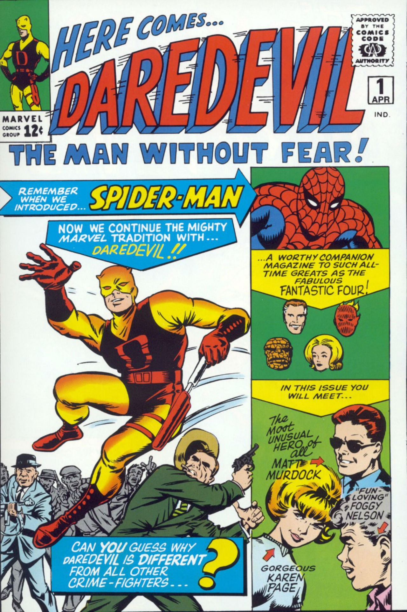

O Demolidor estreou em uma revista própria em 1964, numa história assinada por Stan Lee e Bill Everett. O personagem, assim, nasceu em meio ao boom inicial da Marvel Comics, na construção de seu universo ficcional. Embora tecnicamente existisse desde 1939 – sob os nomes Timely Comics primeiro e depois Atlas Comics – a Marvel só se “encontrou” de verdade com o lançamento do Quarteto Fantástico em 1961. A partir daí, o escritor Stan Lee começou a construir – juntamente aos desenhistas Jack Kirby, Don Heck, Steve Ditko e outros – um universo de novos personagens bastante diferentes da concorrente DC Comics.
 Sobre o título no início da década de 1980, cimentou o personagem como uma parte popular e influente do Universo Marvel. Desde então o Demolidor já tem aparecido em várias mídias incluindo séries de animação, videogames e brinquedos, e num filme Daredevil (2003), em que é interpretado por Ben Affleck.
Daredevil teve recepção mista por parte da crítica especializada. Com base de 35 avaliações profissionais, alcançou uma pontuação de 42% no Metacritic. Por votos dos usuários do site, atinge uma nota de 6.5, usada para avaliar a recepção do público.
Charlie Cox estrela como Matt Murdock, o Demolidor, um advogado cego que combate o crime à noite. Demolidor entrou em desenvolvimento no final de 2013, um ano após os direitos cinematográficos do personagem terem sido revertidos para Marvel.
Demolidor recebeu ampla aclamação da crítica especializada. O Rotten Tomatoes, site que agrega avaliações profissionais, ratificou um índice de aprovação de 98% por parte de especialistas, com uma classificação média de 8/10 baseando-se em 51 comentários destinados à primeira temporada. O consenso crítico do site diz: "Com uma narrativa de origem firme e fiel, alta qualidade de produção, e um toque dramático "não-nonsense", Demolidor destaca-se muito por contar uma história de super-herói arteiro e eficaz, usando um procedimento corajoso, e uma aventura de ação emocionante.